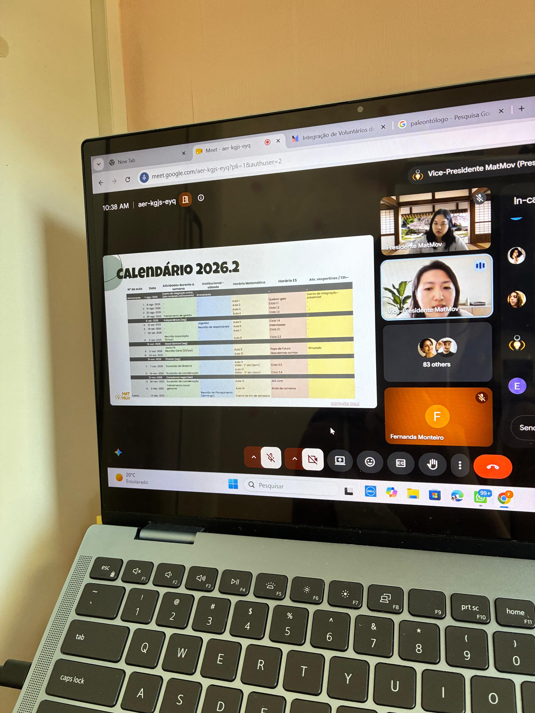

01/2026 — Presente
MatMov
Professora voluntária de ensino sociocultural
No MatMov, uma ONG voltada a estudantes de escolas públicas, sou professora voluntária de ensino sociocultural desde janeiro de 2026. Dou aulas online quinzenais sobre atualidades, pensamento crítico e projeto de vida.

Preparo aulas e slides, corrijo atividades e acompanho os alunos. Também colaborei no planejamento do workshop Construindo Sonhos, compartilho materiais com outros professores e organizei as pastas do OneDrive.
- 16–25alunos por turma
- Aulas quinzenais
- Planejamento de workshop com cerca de 50 participantes